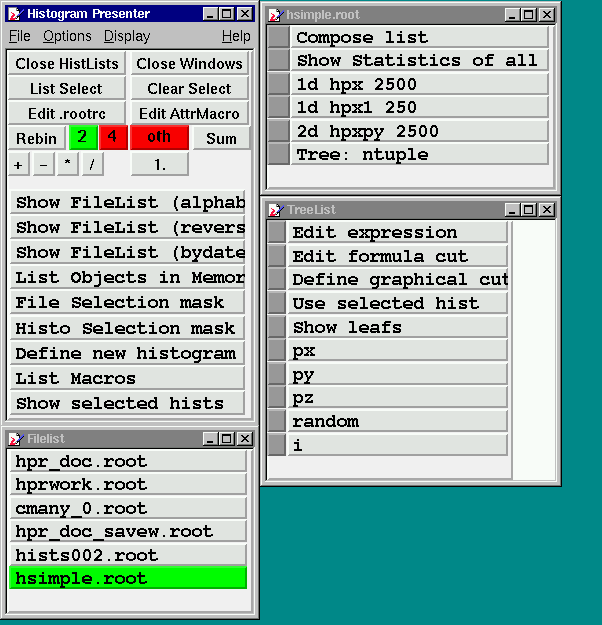
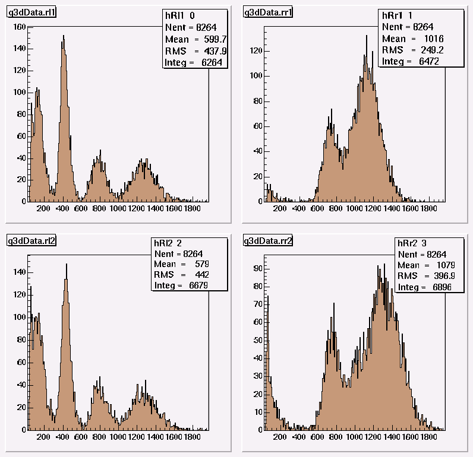

Items on HistPresent startup window HistPresent start window
Operators Rebin selected histogram Edit .rootrc Edit AttrMacro Show Filelist List Objects in Memory Hists from M_analyze File/Histo Selection Mask Show selected histsOperators
If two histograms (or more for Add) are selected one can perform the following operations: + Add: hist1 + factor*hist2 - Sub: hist1 - factor*hist2 * Mul: hist1 * factor*hist2 * Div: hist1 / (factor*hist2) The resulting histograms are shown and stored in memory with new names. Note that in this case the order of selection is important. If only 1 histogram is selected with operation multiply then this gets scaled. For operation Add any number of selections are possible.Rebin selected histogram
Rebin a selected histogram using the selected (green) value. The new bin content may the sum or average of the original bins. A new histogram is created in memory which may be accessed later by the command List Objects in MemoryEdit .rootrc
The content of .rootrc ids described hereShow Filelist
Display a list of root files (.map, .root, .histlist) in current working directory. Ordering may be done alphabetically (or reverse) or by modification time. Tighter selection can be made by defining a FileSelectionMask. Clicking on a file displays the contents (histograms, trees , cuts).The gray square button on the left side of the objects name is used to select the object for operations like Rebin, Add etc. Selecting a cut in this way makes it memory resident and can be used when displaying trees and 2-dim histograms. The command Clear Select resets all selections, currently this does not turn the green button to gray. When a file contains many histograms it can be usful to have lists with only a subset. Such a subset can be defined in a file e.g. mysubset.histlist. (Note: The Extension .histlist is compulsory.) It may contain the name of the file followed by the name of the histogram to be selected (one per line) separated by a space or only the name of the histogram. All histograms in such a list may be displayed in one single canvas allowing a quick overview on many histgrams. This list can be produced either by an editor or by selecting the subset with HistPresent itself (i.e. pressing the grey buttons left of the name) and then clicking on Compose list. A sample session is shown in the attached picture. List Objects in Memory
List objects (histograms, cuts, windows) currently in memory This is needed if new histograms are created by Rebin, or arithmetic operations.Hists from M_analyze
Histograms may be directly fetched from a running M_analyze process via a socket connection to a local or remote hostcomputer. The convention on TcpIp port numbers used is as follows: Online running M_analyze uses port 9090 for communication with C_analyze and HistPresent. Offline processes use port 9091 - 9095, maximum 5 processes are allowed simultanously. The port number used is shown in the C_analyze control window and printed during startup of M_analyze. Notes: When invoking this command first time in a HistPresent session hostaddress and port are requested. Next invocations take the same values. I.e. hostaddress and port cannot be altered in the same session. At each invocation of the command the histogram list and the current statistics are fetched from M_analyze and the command list is build with these values. Pressing on a histogram name will fetch a fresh copy of the the histogram from M_analyze. This also works for the automatic update when using the command Show selected hists. However since histograms are gathered one by one the number of entries will in general not reflect the same number of events collected.File/Histo Selection Mask
SelectionMasks may be defined using wildcard or regular expression syntax. See Help_on_RegExpShow selected hists
This command displays up to 25 selected histograms in one single canvas. Selection is done by pressing the grey button in a histogram list which should turn green. Selection may be done from different lists. Clicking into a histogram will display this with the normal options as Fitting, Expanding etc. In this canvas only the following operations are possible (From the Display popup menu): Show all as selected (Range only) or (Range, Min, Max): First select a histgram with the middle mouse, then adjust the desired range by moving the left mouse pressed in the axis scale. Calibrate all as selected: See Help_on_Calibration Rebin all: Rebin all histograms with the same rebin value. Activate automatic update: This is useful in an online environment where histograms are written to a memory mapped file. This option allows the refresh the display of the histograms in regular intervals. The refresh rate (AutoUpdateDelay) may be choosen from the Option HistPresent numerical options or in the .rootrc file. Notes: Zooming of the x-y axis is possible however these values will not be remembered. To achieve this one should click into the histogram to get the standard view with all options and adjust there the desired range. To ease this operation for many historams to be shown in the same range the option Show Always All As First is provided. In this case it is sufficient to adjust the range only for the first histogram in a list. An example is shown in the attached picture.Example of Show selected hists
